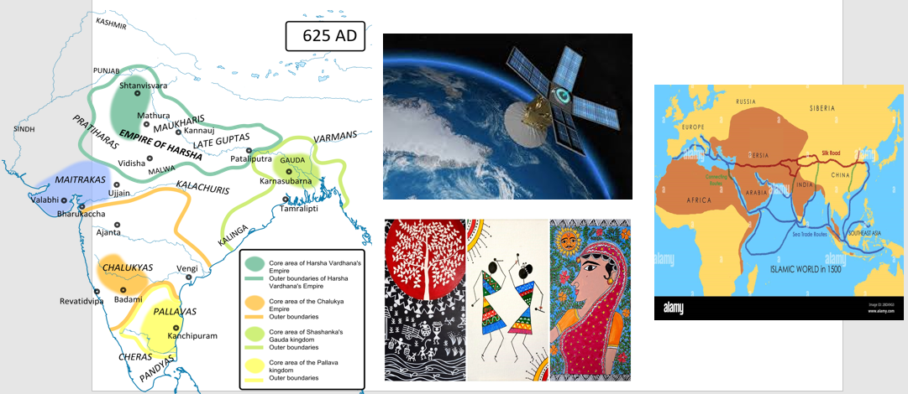

| Subjects | Topics |
|---|---|
| English | Exploring the life and work of Ila Sachani |
| Maths | Research and write about the contributions of anyone Indian mathematician like Aryabhatta, Brahmagupta or Srinivasa Ramujan |
| Science | Study India's contribution to satellite technology through projects like GSAT(communication satellite) or NAVIC(India's regional GPS system).Showcase how these satelites help in weather predictions,navigation, and disaster management across India. |
| SST | Research and explain why people travelled to India from varios parts of the world in ancient times.Explain atleast 4 to 5 motivatins behind travelling to India in ancient times.Describe the routes used to reach India and the favourable geographical fatures and highlight key reasons like trade,culture,religion,learning etc. |
| Hindi | Hind mahasager mai ek chota sa hindustan par ek lekh. 200 words. |
| Marathi | Write information on water pollution in marathi |
| Art | Any style of Indian Art |
